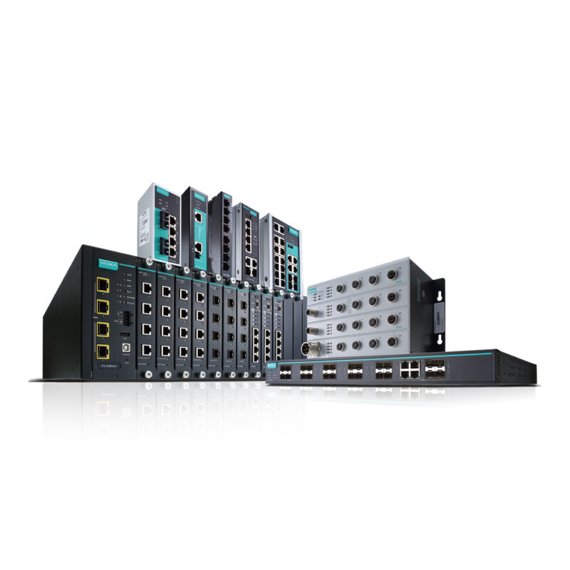
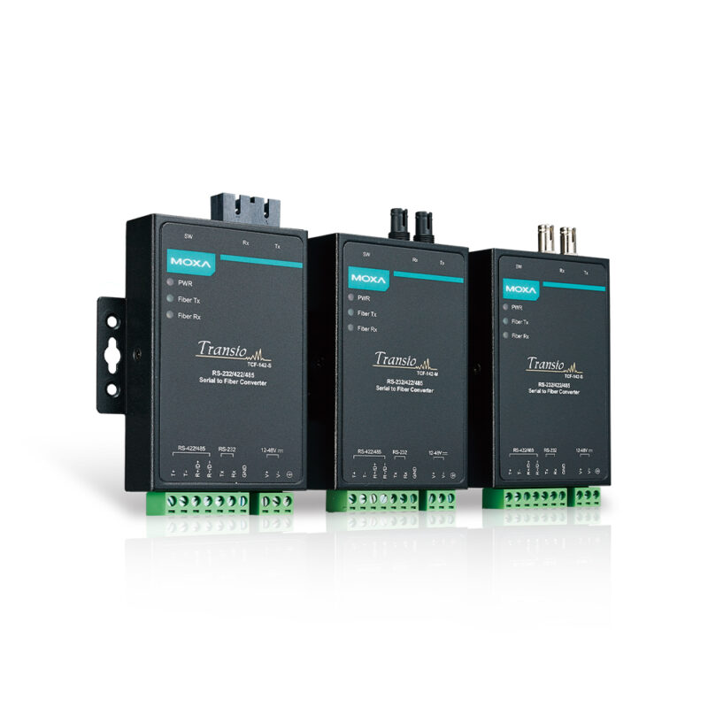
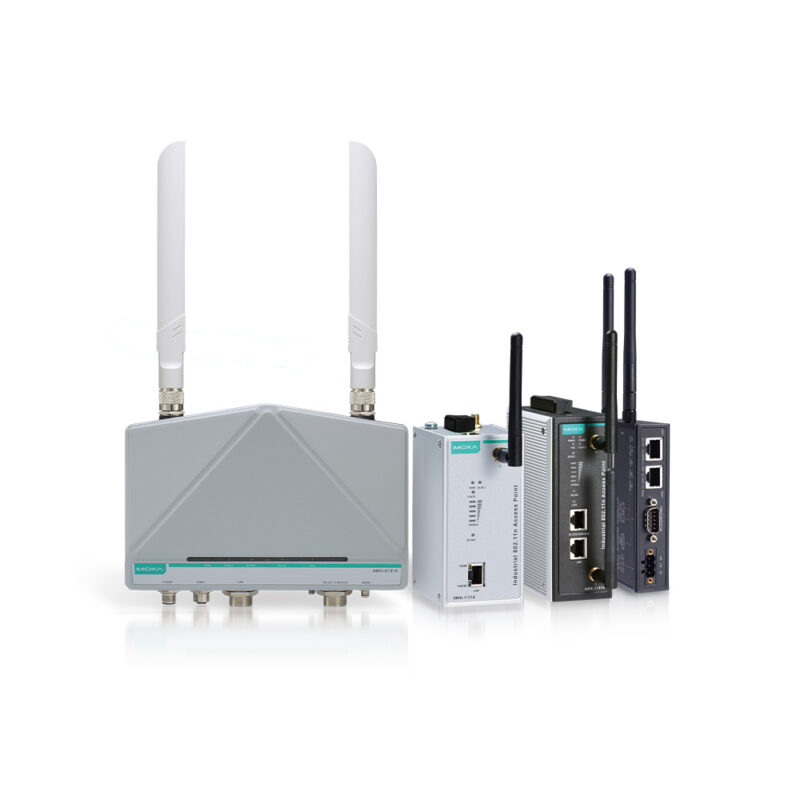

TECH & COLUMN
技術情報・コラム
産業用ネットワーク・コネクタ・組込PCの「選び方」「つまずきポイント」を、現場エンジニア視点で解説。仕様検討・トラブルシューティングの一次情報としてご活用ください。
BY MAKER
Moxa 技術解説

MANAGED SWITCH
産業用マネージドスイッチの基礎
EDS シリーズのVLAN・QoS・冗長化設定の考え方を体系的に解説。
解説を読む ›

NPort SERIES
シリアルデバイスサーバ NPort
既存のRS-232/422/485機器をEthernet化する定番アプローチ。
解説を読む ›

WIRELESS / AWK
産業用無線AP/クライアント AWK
AGV・搬送設備のローミング設計とアンテナ選定の勘所。
解説を読む ›
BY SOLUTION
産業用ネットワーク技術解説
ARTICLES
記事一覧
FAQ & AI ANSWER
各記事の末尾には「よくある質問（FAQ）」を掲載しています
「Modbus RTU と TCP の違いは？」「IP67 と IP68 はどう違う？」といった具体的な問いに、一問一答で明快に回答。検索エンジンや生成AIが参照しやすい構造化されたコンテンツとして、エンジニアの疑問解決をサポートします。